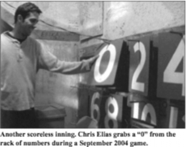
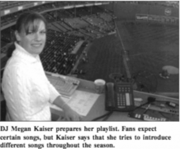

It takes more than just baseball players to make Fenway Park exciting for Boston Red Sox fans. Read “Fenway Park, Behind the Scenes” to find out more, and answer the questions that follow.
by Elizabeth Carpentiere
The bases are loaded with two outs in the bottom of the ninth. The home team is down by one run. The pitcher looks in at his catcher for the sign. The batter digs his back foot in the dirt in the batter’s box. All eyes are on the field.
But while the fans focus on the players, the action on the field isn’t the only action happening in the park. Behind the scenes, another team is at work. Although these players don’t wear uniforms, their play is almost as important to the atmosphere of the game as that of the slugger who comes up with the game- winning hit.
Hours before the game, the park’s “second” team is busy preparing for game time. Grass needs to be cut, highlights from the previous night’s game need to be prepared, and Fenway Franks (hot dogs) need to be steamed and made ready to eat. Throughout the night, it is the support staff’s job to keep the fans informed and entertained.
Most Red Sox fans agree that Fenway Park, built in 1912 and one of the oldest parks in the country, is an exciting place to watch the game. Its small size (it takes only about 35,000 people to fill the seats) gives fans the feeling of being right on top of the game. However, the play of their beloved team is only one reason that fans keep filing into the park. The entire park experience makes a trip to Fenway Park a special event.
The first thing most fans notice when they enter Fenway Park is the towering left-field wall known as the Green Monster. At 37 feet high, the wall can be either a hitter’s best friend (by turning a routine fly ball out into a hit) or his nemesis (turning a sure home run into a long single).
A manual scoreboard takes up much of the face of the Green Monster. While most of today’s ballparks rely on only computer-operated scoreboards, Fenway’s manual scoreboard is part of Fenway’s charm.
“It’s the first thing most fans look at,” says Chris Elias, who has been in charge behind the Green Monster for more than 14 seasons.

Which means that Elias and his two helpers must stay on their toes. If one of them puts up the wrong number, the crowd is quick to let them know. Although keeping score of one baseball game might seem easy, consider that the men also continually need to update the out-of-town scores for all other games going on in both the National and American Leagues. (They keep track of the other games via a laptop with Internet access.) Most Sox fans would consider the manual scoreboard job a dream job. However, like any job, it can get tedious. Rain delays are the worst—the guys just hope that someone brought a newspaper. Inside the cramped Monster, it can get very hot on summer days. And a bathroom? Not in the Green Monster.
However, all it takes is one great play or a clutch hit to remind the men that they are lucky to be part of the Fenway team.
“This is the best summer job I ever had,” says Garrett Tingle, who began working the scoreboard during the 2003 season. “We get to see things that fans watching on TV don’t get to see.”
For the most part, the players are nice, the men say. A few, usually the left fielder, will come to the scoreboard and talk to them through the holes in the wall. The walls inside the Monster are covered with autographs of players, reporters, and fans who have been lucky enough to get a peek inside the wall.
Most of today’s fans, however, need more than the manual scoreboard to entertain them throughout the game. When there is a lull in action or the game is between innings, most fans’ eyes will shift to the huge
Jumbo-tron-screen located above the bleacher seats in center and right field.
Throughout the game, the fans can watch replays from the current game (although controversial plays are avoided so as to not show up the umpires), play trivia games (one of the most popular is guessing the night’s attendance), or even catch a glimpse of themselves as the camera scans the stands for enthusiastic fans.
Closely related to the Jumbo-tron is the music. It is the job of the ballpark “DJ” to keep the crowd upbeat and into the game, even if the home team is losing. Fans who visit the ballpark regularly know when to expect Sweet Caroline by Neil Diamond to come blasting out of the speakers (the middle of the eighth inning). Fans will also start to realize that they can tell who is next to come to bat by the music playing.
Megan Kaiser, who controlled the music for most of the team’s 2004 season, says that most players pick their own songs. That right is reserved for members of the Red Sox only—visiting players get whatever Kaiser feels like playing—who call it part of home field advantage.
